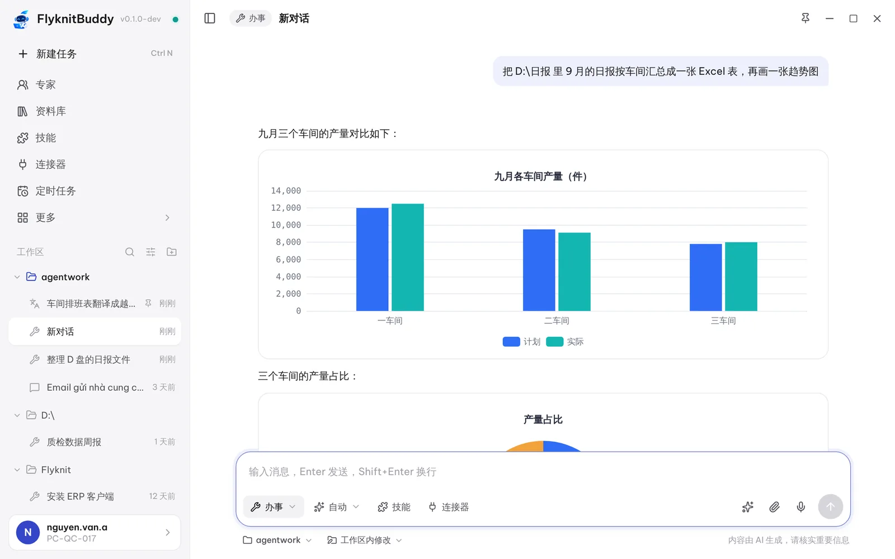
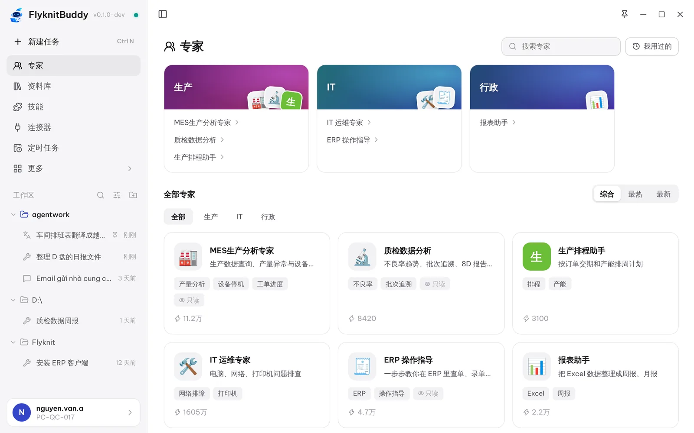
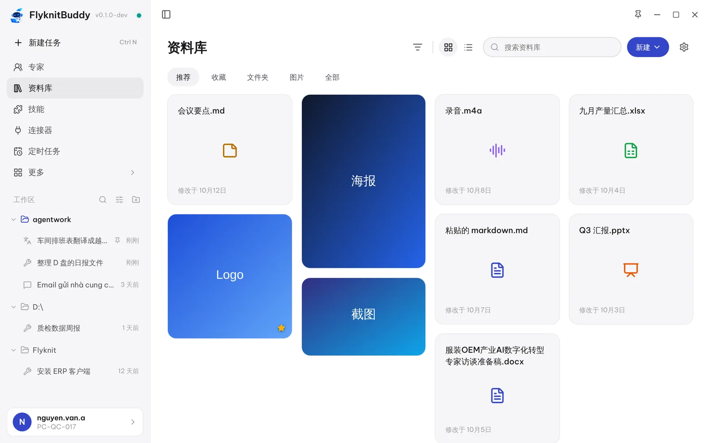

办事：替你操作电脑
读写文件、整理文件夹、执行命令、打开软件。每一步都看得见，改动前自动备份，删除进回收站。
工厂办公电脑上的 AI 助手 · 支持中文 / Tiếng Việt / English
整理文件、分析 Excel、写邮件和报告、翻译、安装软件、操作电脑——用你习惯的语言说一句，它就去办。数据留在公司内网，IT 统一管理。

功能
不用学新软件、不用写公式和命令。说清楚要什么，它会自己拆步骤、动手做、把结果交给你。
读写文件、整理文件夹、执行命令、打开软件。每一步都看得见，改动前自动备份，删除进回收站。
汇总报表、画图表、写周报、做汇报 PPT。直接生成文件，放在你指定的文件夹。
整段、整份文件都能翻，保留原格式。工厂术语表统一用词，选中文字按 Ctrl+Alt+T 就地翻译。
IT 为生产、质检、行政等业务配置好的 AI 专家，懂流程、懂术语，选一位直接说事。
对话里用过、生成的文件自动收好，按图片、文档、收藏分类，下次一句话就能找到并继续用。
公司技能库里的标准流程一键安装；连上 MES、ERP 等系统后，AI 能直接查数据、办业务。
每天早上汇总昨日产量、每周五出质检周报——设好时间，到点自动执行，完成后通知你。
记住你的习惯和常用信息，同类任务做顺了会总结成技能，下次更快更准。
办事模式
它会先看清楚文件、拆好步骤，再一步步做完。需要动到重要文件时先问你，做完把文件和结论一起交给你。
翻译
通知、排班表、邮件、整份 Word 和 Excel 都能翻。原文已经是你的语言时，自动换成另一种。
本周五起二车间改为两班倒，早班 7:00–15:00，晚班 15:00–23:00，请各组长通知到每位员工。
Từ thứ Sáu tuần này, Xưởng 2 chuyển sang làm hai ca: ca sáng 7:00–15:00, ca tối 15:00–23:00. Đề nghị các tổ trưởng thông báo đến từng công nhân.
Starting this Friday, Workshop 2 will run two shifts: 7:00–15:00 and 15:00–23:00. Team leaders, please inform every worker.
专家
IT 在后台按业务配置专家：工作方式、知识、能用哪些系统，一次配好、全员可用。新员工也能像老员工一样办事。

场景
点一个岗位，看看大家平时都让它做什么。
资料库
发给 AI 的附件、它生成的报表和文档、截图，自动归档。按收藏、文件夹、图片浏览，或者直接说「把上周那份产量表再改一下」。

随手可用
点一下打开，拖文件到球上直接发给 AI，右键还有对话浮窗、划词翻译、截图提问。
在任何软件里选中文字，按 Ctrl+Alt+T，鼠标旁弹出译文。
按 Ctrl+Alt+S 框选屏幕上看不懂的报错、表格，直接问。
在文件上右键「发给 FlyknitBuddy 提问 / 总结 / 翻译」，在文件夹里「在这里办事」。
安全可控
AI 能操作电脑，所以每一层都有护栏。规则由 IT 统一配置，实时下发到每台电脑。
服务端和模型网关部署在公司内网，对话、文件、记忆都在公司自己的服务器和员工电脑上。
默认只能在你选的工作区里读写文件，越界访问先问你；网络访问走白名单。
格式化、批量删除、改注册表这类高危操作直接拦下，重要操作执行前请你确认。
修改文件前自动备份，删除的文件进回收站，随时还原。
每一次执行命令、写文件、被拦截都记入审计日志，员工自己能看，IT 后台能查。
模型、额度、专家、技能、安全策略在管理后台一处配置；新版本自动推送，无需逐台安装。
下载安装后用公司域账号一键登录，不用填服务器地址。
下载暂未开放。请联系 IT 信息科技部获取安装包。
系统要求：Windows 10 / 11（64 位）· 需要连接公司内网 · 安装程序需要管理员权限；没有权限时请用免安装版
常见问题
不需要。FlyknitBuddy 是公司内部工具，安装后用公司域账号登录即可，每天有一定的使用额度，用完了可以联系 IT 调整。
对话和文件保存在你的电脑和公司内网服务器上，不会发到公司外部。按公司制度，IT 在必要时可以查阅审计记录。
默认只能在你选的工作区里操作；删除的文件进回收站，修改前自动备份；高危操作会被直接拦截，重要操作执行前会先问你。
可以下载免安装版（.zip），解压后双击 FlyknitBuddy.exe 即可。安装程序（.exe）需要管理员权限，安装后会自动更新。
界面支持中文、越南语、英语，随时在设置里切换。对话时用哪种语言提问，它就用哪种语言回答。
在程序里点「反馈」可以直接把问题和截图发给 IT；也可以联系 IT 信息科技部。